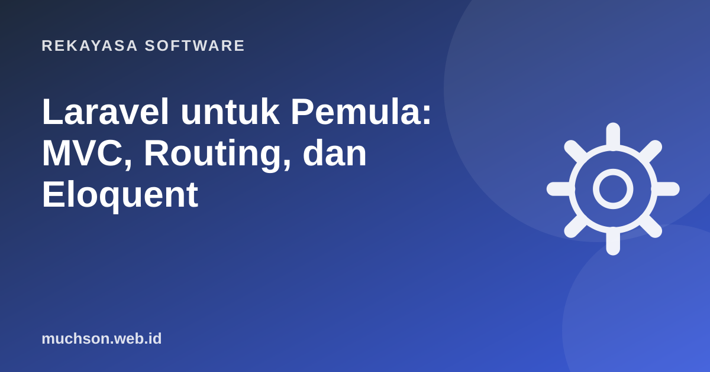

Beranda › Artikel › Rekayasa Software
Rekayasa SoftwareLaravel untuk Pemula: MVC, Routing, dan Eloquent
Laravel adalah framework PHP yang membuat pekerjaan backend sehari-hari terasa ringan: routing, database, autentikasi, antrean, email, hingga penjadwalan sudah tersedia dengan gaya penulisan yang rapi. Banyak aplikasi bisnis di Indonesia dibangun dengan Laravel, dan lowongannya selalu ada.

Alur sebuah request dalam MVC
Instalasi
# butuh PHP 8.2+ dan Composer
composer create-project laravel/laravel toko
cd toko
php artisan serve
# buka http://127.0.0.1:8000| Folder | Isi |
|---|---|
app/Models | Model Eloquent |
app/Http/Controllers | Controller |
routes/web.php | Route halaman web |
resources/views | Template Blade |
database/migrations | Riwayat struktur tabel |
.env | Konfigurasi rahasia: database, mail, key |
Migration: struktur tabel sebagai kode
php artisan make:model Produk -mc # model + migration + controller
// database/migrations/xxxx_create_produks_table.php
Schema::create('produks', function (Blueprint $table) {
$table->id();
$table->string('nama');
$table->unsignedInteger('harga');
$table->unsignedInteger('stok')->default(0);
$table->timestamps();
});
php artisan migrateMigration membuat perubahan struktur database tercatat di Git, sehingga semua anggota tim dan server punya struktur yang sama.
Route dan controller
// routes/web.php
use App\Http\Controllers\ProdukController;
Route::resource('produk', ProdukController::class);
// otomatis: index, create, store, show, edit, update, destroy
// app/Http/Controllers/ProdukController.php
public function index()
{
$produk = Produk::orderBy('nama')->paginate(10);
return view('produk.index', compact('produk'));
}
public function store(Request $request)
{
$data = $request->validate([
'nama' => 'required|string|max:100',
'harga' => 'required|integer|min:0',
'stok' => 'integer|min:0',
]);
Produk::create($data);
return redirect()->route('produk.index')->with('ok', 'Produk tersimpan');
}Agar Produk::create($data) berjalan, daftarkan kolom yang boleh diisi di model: protected $fillable = ['nama', 'harga', 'stok']. Ini mencegah pengguna mengisi kolom lain seperti is_admin (mass assignment).
Blade: template yang aman
{{-- resources/views/produk/index.blade.php --}}
@extends('layouts.app')
@section('content')
@if (session('ok'))
<div class="alert">{{ session('ok') }}</div>
@endif
@forelse ($produk as $p)
<p>{{ $p->nama }} - Rp{{ number_format($p->harga, 0, ',', '.') }}</p>
@empty
<p>Belum ada produk.</p>
@endforelse
{{ $produk->links() }}
@endsection{{ }} otomatis meng-escape HTML sehingga aman dari XSS. Hindari {!! !!} untuk data dari pengguna.
Eloquent: database dengan bahasa PHP
Fitur yang membuat Laravel produktif
- Starter kit (Breeze, atau starter kit React/Vue/Livewire) untuk login, daftar, reset password.
- Queue untuk pekerjaan berat di belakang layar: kirim email, proses gambar.
- Task scheduling menggantikan banyak cron job.
- Artisan untuk membuat file dan menjalankan perintah.
- Pest/PHPUnit untuk pengujian, sudah terpasang.